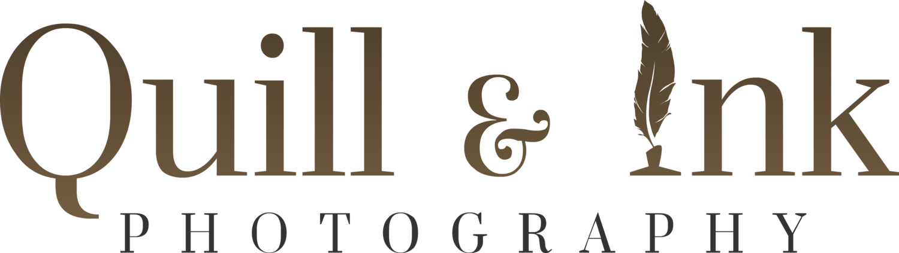

|  |
Quill & Ink PhotographyWedding & Elopement Photography Based in Calgary,AB A wordplay on their names, "Quill & Ink" is the brainchild of Will and Ingrid.Having studied Visual Arts, photography, design and art is second nature to Will. Concepts, whether rehearsed, researched or spontaneous, come through flawlessly. Quill & Ink is the offspring of sheer talent and perseverance. Once a project is started, bear in mind that you will not just merely witness documentation. Quill & Ink is a promise of profound passion and commitment embracing you, your life events and your ideas until our services have been fully rendered. |
| Dates | Work |
|---|---|
| 2017-2020 | Weddings |
| 2017 | Elopement |
| skill | rating |
|---|---|
| Wedding | ⭐⭐⭐⭐⭐ |
| Engagement | ⭐⭐⭐⭐⭐ |
| newborn | ⭐⭐ |